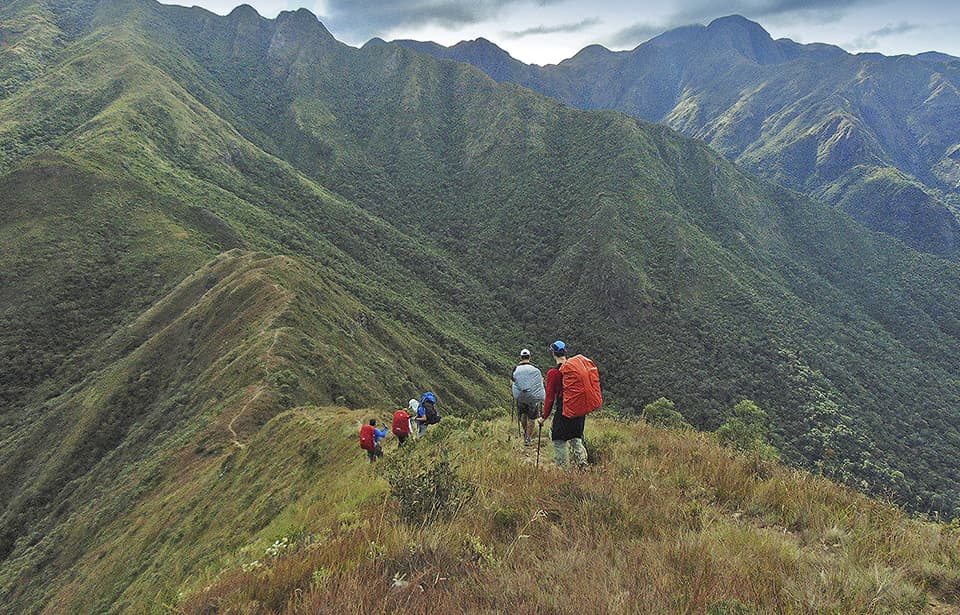

A história do esporte
A história do esporte é antiga e teve origem no século XIX, através dos trabalhadores holandeses que colonizaram a África do Sul. Eles utilizavam o termo Trekken para designar sofrimento e resistência física. Com a chegada dos ingleses ao local, a expressão foi adaptada e passou a denominar as longas caminhadas realizadas pelos trabalhadores britânicos. A partir daí, com a chegada dos novos aventureiros o termo se expandiu e hoje é sinônimo de um dos esportes mais praticados em todo o mundo. Segundo o Diretor do Departamento de Trekking da ABEA (Assossiação Brasileira de Esportes de Aventura), Esdras Martins, o esporte no Brasil teve suas primeiras provas no ano de 1985, em Minas Gerais. “Algumas provas foram realizadas em Minas Gerais, mas só depois de ser trazido para São Paulo em 1992, é que o trekking adquiriu a forma atual, quando foram adaptadas as regras dos enduros de moto e jipe”.
Denominação
É denominada de trekking a caminhada realizada através de trilhas naturais, onde o praticante alivia o estresse e mantém uma relação mais saudável com a natureza. O trekking teve origem nas primícias do século XIX. A palavra trek que significa migrar, é originada da língua africâner, sendo empregada pelos votrekkers, trabalhadores holandeses que colonizaram a África do Sul. Com a invasão britânica na região, a palavra aderiu à língua inglesa. O grau de dificuldade do trekking varia de acordo com a capacidade do praticante, tendo níveis fáceis, médios, difíceis e superiores. O trekking foi introduzido no Brasil por volta de 1922, quando alguns amantes da natureza resolveram adaptar as regras dos enduros de moto e jipe à caminhada ecológica. O trekking pode ser praticado por qualquer pessoa, desde que a mesma conheça os limites do seu corpo.
Onde deve ser praticado o Trekking
O trekking por lazer pode ser praticado em qualquer local que disponha de uma trilha interessante, mas alguns locais têm acesso restrito e precisam de autorização ou pagamento de taxas que permitam a tramitação de pessoas estranhas.
Como se preparar
Muitos se perguntam o que podem fazer antes de partir para um trekking. A resposta é que não adianta preparar os acessórios se o seu corpo e mente não estiverem em equilíbrio. É claro que a viagem contribuirá para esse estado, mas é preciso ter o mínimo de consciência do que irá fazer.
A respiração também é uma importante aliada para esse tipo de esporte. Respirar calmamente ajuda a ter mais concentração e a aliviar o nervosismo, essencial para a caminhada. Práticas como o yoga podem ser de grande ajuda nessa situação. Quem realiza o método com frequência sentirá mais facilidade para manter a mente controlada, a boa respiração e ganhará mais autoconhecimento. Confira mais alguns benefícios do yoga para os amantes de trekking:
- Fortalecimento dos músculos;
- Aumento da consciência corporal;
- Equilíbrio da mente;
Esteja preparado emocionalmente! Com certeza você irá encontrar dificuldades e desafios físicos, mas principalmente irá sair de sua zona de conforto e irá se deparar com aspectos de você mesmo, que desconhecia. É quando mudanças internas acontecem e crescemos, nos tornamos de alguma forma mais conscientes de nós mesmos e das necessidades dos que estão ao nosso redor.
A experiência
Os trekkings no Brasil e no mundo consistem em caminhadas ao ar livre geralmente com uma longa duração, quando portam-se equipamentos específicos para subsistência, em uma logística específica, seja de pernoites com barracas, sacos de dormir, como outros equipamentos essenciais para a vivência de uma expedição de trekking.
O maior diferencial desse tipo de turismo de aventura são as sensações e vivências simples porém completas como assistir ao nascer e por do sol no topo das montanhas, atingir os objetivos de cada dia, vencer seus próprios limites. Aprender que apesar do esforço físico, queremos acima de tudo nos tornar mais completos e vivenciar novas experiências. Sentir o sentimento de conquista, realização e de integração com o ambiente em nossa volta.
Diferença entre trekking e hiking
No Brasil o termo mais comum é o trekking. É bastante normal que as pessoas chamem qualquer trilha de trekking. Para que essa prática seja realmente condizente com a programação, é preciso que a aventura seja de longa duração. Em geral, os trekkings duram mais de um dia e é preciso passar a noite em meio à natureza, seja em alojamentos preparados no meio da rota ou em barracas.
O hiking é mais acessível, rápido e não dura mais de um dia. Para exemplificar de forma simples, ele pode ser considerado um bate e volta na trilha. Não é necessário carregar apetrechos de acampamento ou grandes mochilas. Este tipo de aventura é ideal para quem quer aproveitar um dia longe da cidade ou até explorar as trilhas em parques nas regiões metropolitanas.